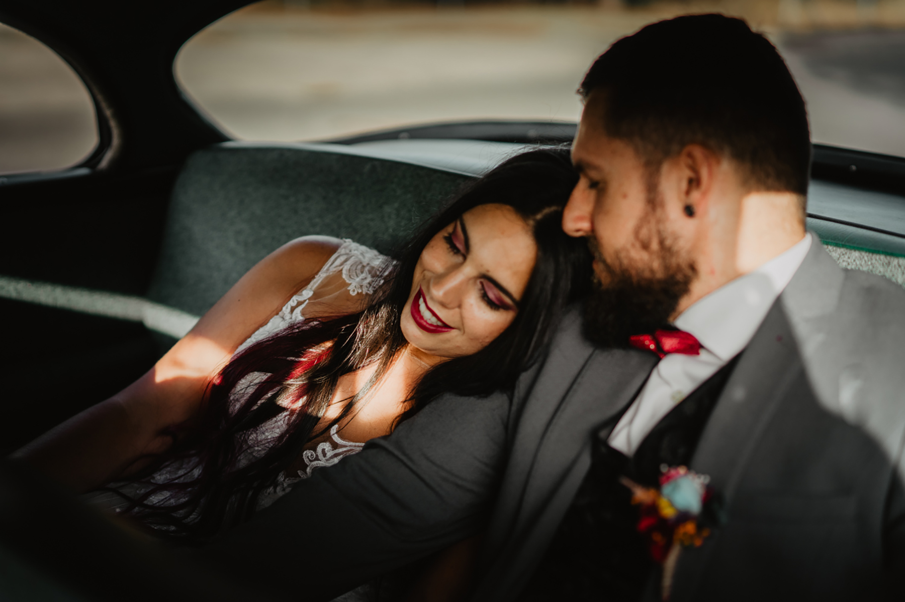
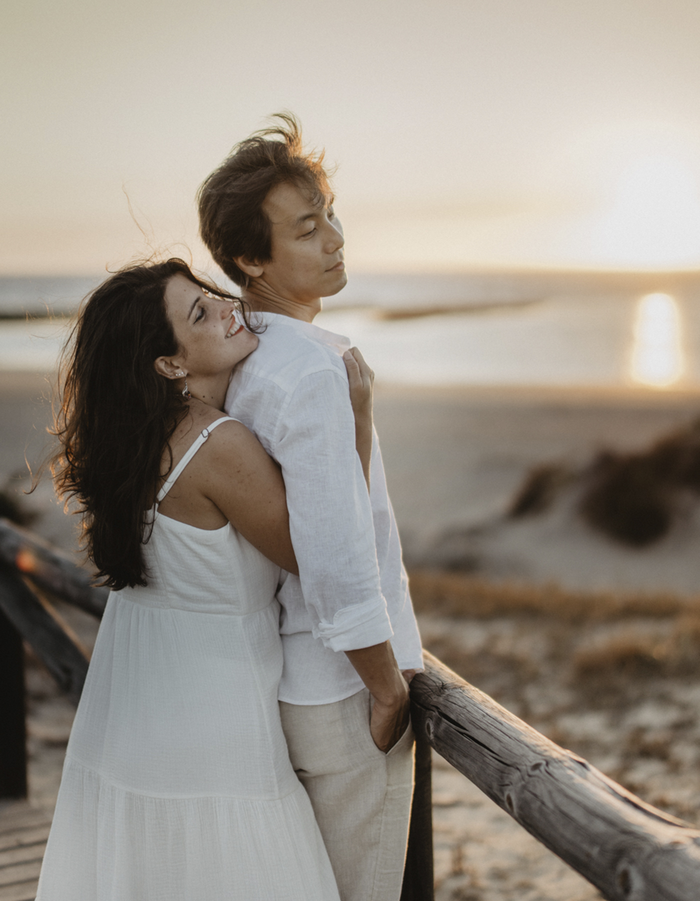
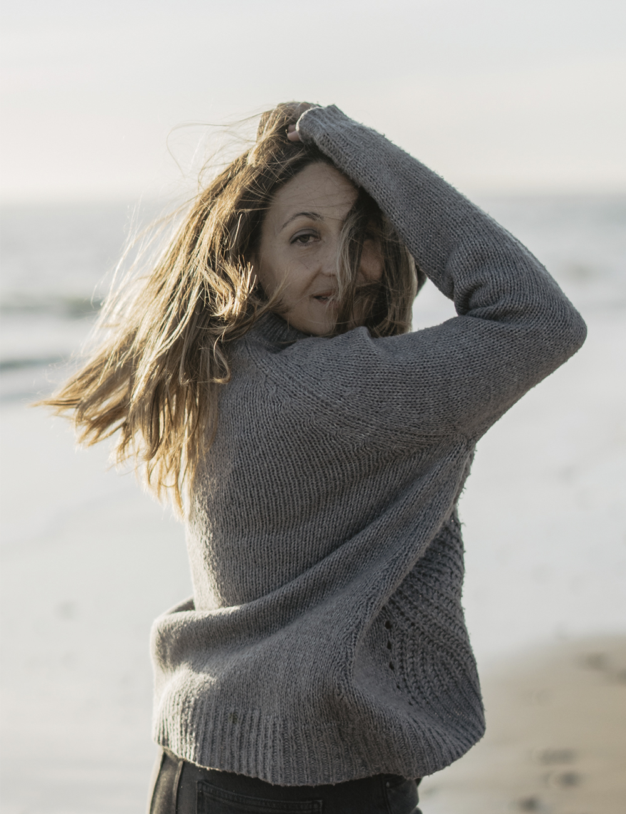
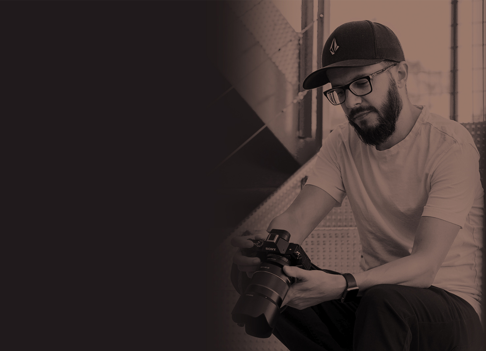

Fotografía · Rota · Cádiz
Cercanía
Autenticidad
Luz
Historias reales. Emociones sinceras. Recuerdos que permanecen.
↓01 / 04
01
Mi forma de fotografiar
Fotografiar lo que se siente, no solo lo que se ve.
Me interesan las miradas, las risas, los abrazos y esos pequeños instantes que pasan casi sin avisar.


02Momentos
que cuentan.
que cuentan.

03¡Hola!
Detrás de la cámara
¡Hola!
Soy Manu.
La fotografía es mi manera de mirar el mundo. Me gusta trabajar desde la cercanía, sin forzar momentos, dejando espacio para que las cosas sucedan.
Conóceme un poco más →¿Hablamos?